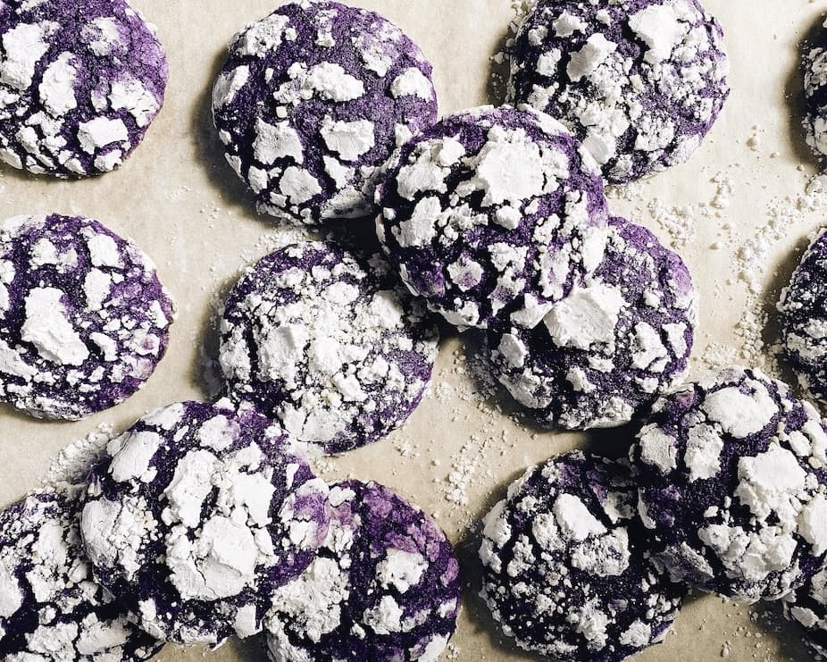

Welcome to my Ube Crinkle Cookie recipe! Making these yummy cookies will end with you having with soft and pillowy purple treats to share with everyone around you. We'll use a combo of ube extract and ube halaya (purple yam jam). Ube is a purple yam originating in Southeast Asia, with specific historical roots and centuries of cultivation in the Philippines. Ultimately this recipe brings together the beloved flavors of Ube with the classic crinkle cookie to make a holiday classic for Filipinos across the world.
Ingredients
Instructions
- Use a stand mixer or hand mixer to cream together softened butter, brown sugar, and granulated sugar.
- Add a room-temperature egg and mix until completely fluffy.
- Add ube halaya and the ube extract (food coloring can be added as well if desired) and mix until its evenly combined into a consistent purple.
- Add in flour and baking powder. Mix until just combined. Do not overmix!
- Scoop the cookies onto a baking sheet using a small ice cream scoop (1 tablespoon per cookie). Now let the dough chill for at least 1 hour in the fridge.
- While you're letting it chill, preheat the oven to 350°F. Line a baking tray with parchment paper.
- Roll your chilled cookie dough balls in a light layer of granulated sugar, and then roll them in the powdered/icing sugar.
- Optional: Gently press a little amount of coconut flakes into the top of each dough ball before baking.
- Now you can place the cookies 1 inch apart or more on the parchment paper and bake for about 10 minutes.
- Let them cool on the pan for a few minutes before moving them.